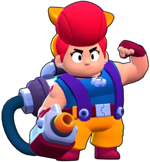

¿Quién es Pam?
Pam esta hasta arriba de trabajo en la chatarrería, ¡pero siempre es capaz de lidiar con todo! Aunque es una pena que no pueda pasar más tiempo con su hija, Jessie...
Pam es una Brawler Épica, Su ataque son pequeñas tuercas que lanza su especie de pistola, que hace daño al enemigo, su ulti es una torreta que la cura a ella.
|  |
NIVEL DE FUERZA 11 |
Sus gadgets
MODULADOR SÍSMICO: La torreta de Pam emite una onda sanadora que la revitaliza a ella y a los aliados cercanos y les restaura 1920 puntos de salud |
ABSORBE CHATARRA: Por cada golpe del siguiente ataque de Pam, los rivales perderan 25% de la municion restante y Pam se quedara con el 50% |
Sus habilidades estelares
 |
ZONA DE CONFORT: Cuando Pam alcanza los enemigos con su ataque, ella y los aliados más cercanos recuperan 96 puntos de salud. |
 |
CURACION DESTRUCTIVA: La torreta curativa inflige 960 puntos de daño por segundo al enemigo. |
 Braian Arancibia
Braian Arancibia Aya El Baarar
Aya El Baarar